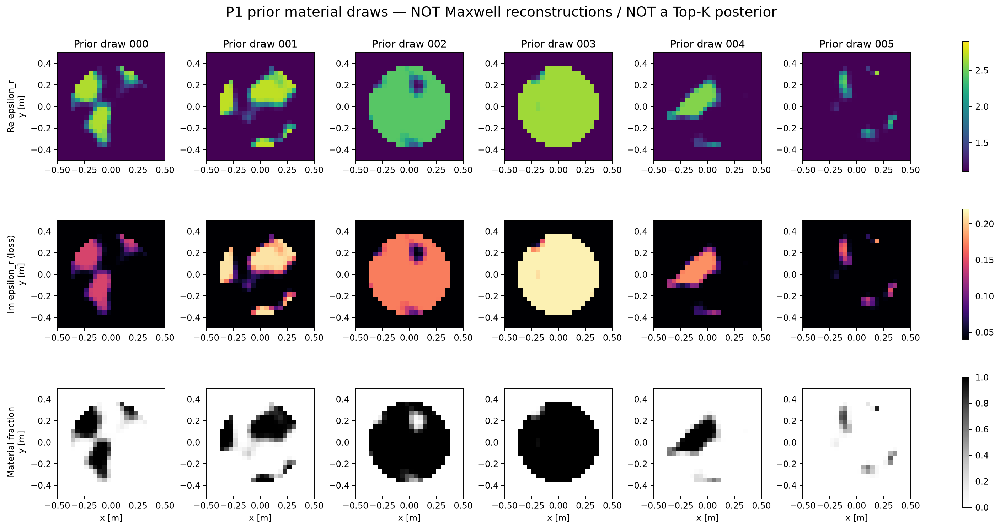
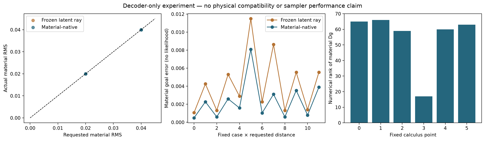

P1已经实现：材料支持就绪，真实Maxwell资格尚未运行
2026-10-18 · 独立新prior · 24×24 scalar TM · 无NN训练
这次实际完成了什么？
192已保存的先验材料66连续latent坐标24材料侧运动端点0新Maxwell states / RHS
相关场、被动材料参数、C2混合decoder、正规化latent prior与噪声定义已经写成可运行代码。不同结构由解码后统计，generator没有孔洞数量或topology label。
这些图是先验样本，不是同一测量的多解或后验模式。在线观测与独立物理anchor仍为NOT_RUN。
完整中文报告 →
实际P1材料，不再只有一个双Gaussian chart

按固定顺序展示前六份calibration draw；没有按形状挑图。宿主区为χ=.1+.04i，不是绝对空气；已知外包络，内部形状未知。
材料运动能运行，仍有明确失败

两种方法各12次，均达到.02/.04材料RMS。native仅2/12正常收敛，10/12触及迭代上限；两方法各1/12满足预设结构变化尺度。没有Maxwell或likelihood优越性结论。
下一步已经具体到可执行入口
计费接口、固定两个parent的观测生成、隔离GT的独立Full-J反演与立即持久化均已实现。当前物理预算为0，调用在导入物理backend前终止。
第一轮资格建议：32个states、1024个complex RHS、600秒CPU。只在新的明确授权后执行；历史预算不借用。合格anchor后再比较F3-native / A17-X，保留exact T-matrix、普通Full-J和goal-oriented ROM。
固定任务、预算与停止条件 →
证据与限制
物理求解0、NN/GPU/Mie/新3D均0。成功材料分析wall .976s，首失败attempt wall未测，不冒充总费用。先验事件频率不是后验概率，所有材料样本现已暴露。
实际指标 · 资源与失败 · 模型与测度 · 复现入口